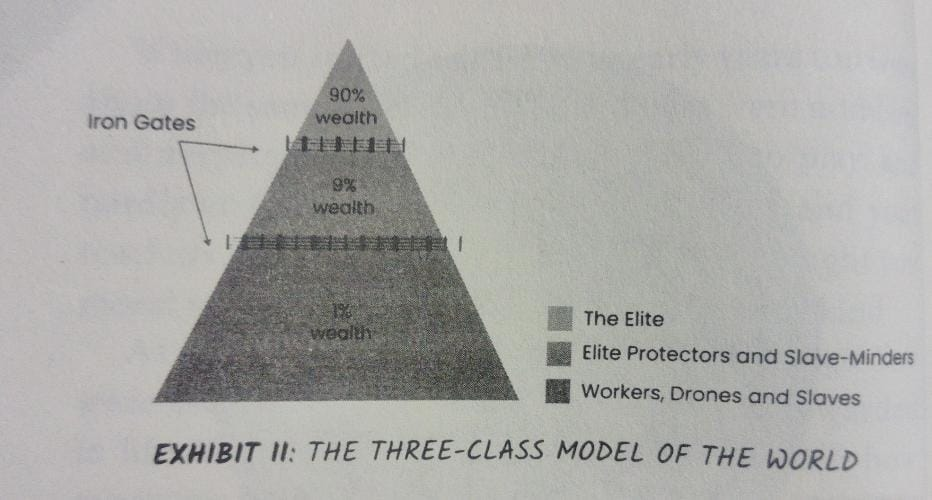
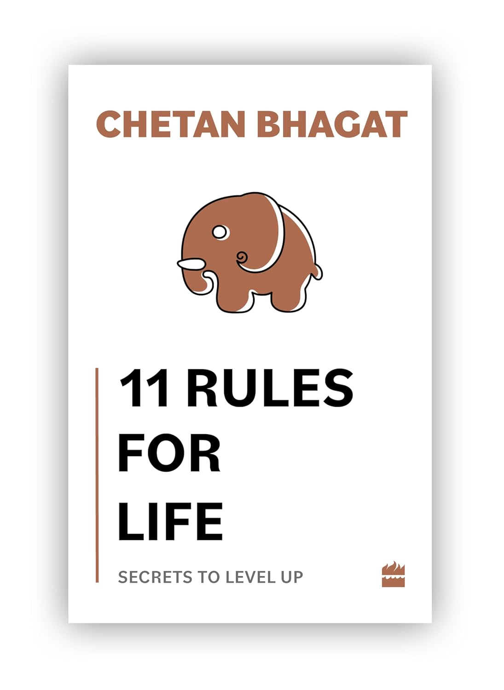

At the top is the Elite class or Class I—the rich, powerful, and famous, or a combination of all three. These are industrialists, entrepreneurs, politicians, media moguls, movie producers, movie directors, movie stars, sportspeople, fund managers, investors, CEOs, CFOs, and people at the absolute top of their fields. They are the smallest class in terms of number of people, commonly referred to as the ‘1 percenters’ in popular media, implying they are only around 1 percent of the world’s population.
I don’t have exact percentages and this 1 percent is just an educated estimate. However, they wield the most clout, and control almost everything that happens in this world.
I’m not being a conspiracy theorist. I’m not implying that the 1 percent "Elite" talk to each other and plan to screw over the rest of the world. That’s not true. This 1 percent of the world’s 8 billion population, that is 80 million, is still a large number. These 80 million people can’t all be connected or conspiring against the rest. However, these 1 percenters collectively control most of the world’s resources, money, and power. Like any other human being, they make decisions based on what is best for them. Hence, invariably, they use all that the world has to offer to serve themselves first.
Sure, they want to sound and look good. Some of them talk of helping the world or of equality. But they are obviously quite happy with the unequal place they have in society, which is in the top 1 percent. People don’t find inequality unjust when they are the ones with the unfair advantage.
I’m not judging these people. Some would say, and rightly so, that I too belong to this class now. However, I was one of you at one point. I want you to get here as well. My purpose of writing this book is to help you join this elite 1 percent class. It’s hard as hell if you don’t already belong there, but it isn’t impossible. It is difficult because heavy Iron Gates that act as entry barriers block those below from reaching the peak of the mountain.
The Elite are not only protected by these Iron Gates but also by a whole other class which guards and protects the Elite.This is what I call Class II,the Protectors.
Out of the second class of people are those who serve, protect, and work for the Elite. They are around 9 percent of the total population (again, I don’t have an exact percentage, so this is just my rough estimate). Class II is a lot larger than the elite 1 percenters. Class II includes doctors, engineers, bankers, collared class, the lawyers, government employees, accountants, certain higher grade government employees, and similar level professions. They are the upper-middle class and if they save like hell, could also become borderline Elite.
Listen, the people are the bourgeois of the French Revolution—not super-elite but still have significant influence. The Elite hire them to run their corporations and factories, serve them, position treatments to their accounts and another essential function. They manage the class below them, or class III.
The Class II Elite Protectors further guard the Elite. The Protectors work in an upward class. For instance, some Elite Protectors work for a multinational corporation in management roles. Many of the new Protector class do not come from the same Elite Protector class. They only recruit from the colleges where the children of Elite Protectors study at their level. There is almost a strict demotion—anybody below them to rise easily.
This is society’s largest segment. It probably around 90 percent of the population. Income levels are lower and vary significantly, the lower middle class and middle-class money always goes downwind in this category. The highest anyone in this class normally take back control from the Elite. Indeed, that is what happened in some socio-economic revolutions in the history of our world.
However, for the most part, Class III is just being workers, drones and slaves for the world, and the Elite Protector class ensures this hierarchical way intact as long as possible. The Iron Gates prevent class jumps, or climbing up to a higher class.
Class III people do most of the work to run a country. People in this category start from the lowest paying jobs—daily labourers, domestic helpers, janitors, workers at roadside stalls, etc. This category also includes clerks, delivery boys, retail salespeople you see in malls, waiters, hotel staff, factory workers, drivers, cooks, receptionists, cleaners, the person who helps you to connect your Wi-Fi at home, the guy at the mobile phone repair shop, and similar professions. People in this class make just about enough for them to survive, but if there is an emergency spend like say an unexpected medical expense, the Class III person ends up in debt.
Even if Class IIIs try their best to save money, they never accumulate reasonable wealth or assets. They cannot afford expensive education for their children. As a result, they stay in this class all their life, as do their kids. The Iron Gates, which we will discuss in the next section, are extra strong here to prevent Class IIIs from moving up.
What keeps this class hierarchy intact are the Iron Gates. These are the various entry barriers, which make it almost impossible for someone to jump class.
Sure, sometimes class jumps do happen in India. When it does, it is seen as a rare event. Those who have done so become mini heroes. However, most people are expected to remain in their class and never attempt to break open the Iron Gates.
Exhibit III shows what comprises the Iron Gates, or the actual reasons why class jumping is so hard.
Iron Gates exist between Class II and Class I as well. A big jump to Class I is reserved for the very few who can break or climb over these gates and jump up. This requires networking right at the top, hard work well beyond the average, a certain amount of luck or god-given talent and creativity. Mostly, Class I people like to keep this extremely rare ‘1 percenter’ class to themselves and for their kids, who automatically become the next generation Class I.
You have no control over where you are born—in Class I, II or III. Moreover, society is designed to keep you in that same class throughout your life. Most people are so caught up with basic survival that the barriers seem insurmountable and that makes them accept their fate.
There is a concept in India called Aukaat, a word which has no exact English translation. However, it comes somewhere between status, success or jump class and reach in life.
To achieve success is to jump class and cross your aukaat.
There is pain in progress, but there's pain in stagnation and decline too. It's hard to do well, but it's equally hard to live a life of failure. Choose your pain and choose your hard.
If progress is what you choose, congratulations! You are with me.I will now prepare you to fight this tough battle,win and be rewarded for it. I will tell you how to get a life filled with success,joy and happiness.I will give you my eleven secret rules of success and life.You must follow them if you want to win.All I need from you is your focus and commitment. Do I have it?
Want to master the 11 rules to cross the iron gates? Grab your copy of the book now !
11 rules for life: Order on Amazon
ABOUT THE AUTHOR : Chetan Bhagat is a bestselling Indian author, columnist, and motivational speaker known for his engaging and relatable writing style. His works often focus on themes of youth, relationships, and societal issues, making him popular among young readers. In addition to writing, he is a public speaker and shares insights on career growth, motivation, and self-improvement.